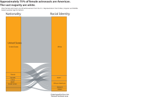
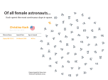

First female astronaut is travelling beyond low Earth orbit and around the moon
Four astronauts aboard NASA’s Artemis II — including Christina Koch — are the first crew to leave Earth’s orbit in more than 50 years.
NASA’s Artemis II launched last Thursday, sending four astronauts into lunar orbit. This launch, the first time humans left the Earth’s orbit since 1972, includes one female astronaut, Christina Koch. She will be the first woman to travel beyond low Earth orbit as well as travel around the moon. The crew’s composition was notably more diverse than the Apollo 13 crew more than 50 years ago — it featured the first Black person, the first non-U.S. citizen and the first woman to be in a moon launch, PBS reported

“I think for me, [Artemis 2] comes down to not being any single individual's accomplishments. The accomplishment that we can celebrate together is that we got here,” said Koch, speaking at an Artemis 2 event in September to Space.com. “Decades ago, we made the right decisions so that our astronaut corps brings diverse backgrounds together to solve the hardest problems. And that, to me, is what's truly worth celebrating, and what I'm honored to be a part of."
Koch was selected as a NASA astronaut in 2013. She launched for her first mission in 2019, four years after she finished training.
Koch, who spent more than 300 days aboard the International Space Station in 2019, also participated in the first all-female spacewalks. She held multiple roles at NASA since her selection as a NASA astronaut in 2013 and prior to her current role as Mission Specialist I of the Artemis II mission. She is joined on the flight by NASA astronauts Victor Glover, Reid Wiseman and Canadian Space Agency astronaut Jeremy Hansen.

The astronauts will experience a total solar eclipse while in space. NASA hopes a successful mission will test their Orion technology and potentially lead to a moon landing in 2028. The astronauts will return on April 10, just about ten days after leaving the Earth’s atmosphere.
Original visualization “Women in Space” here, by Varun Jain.